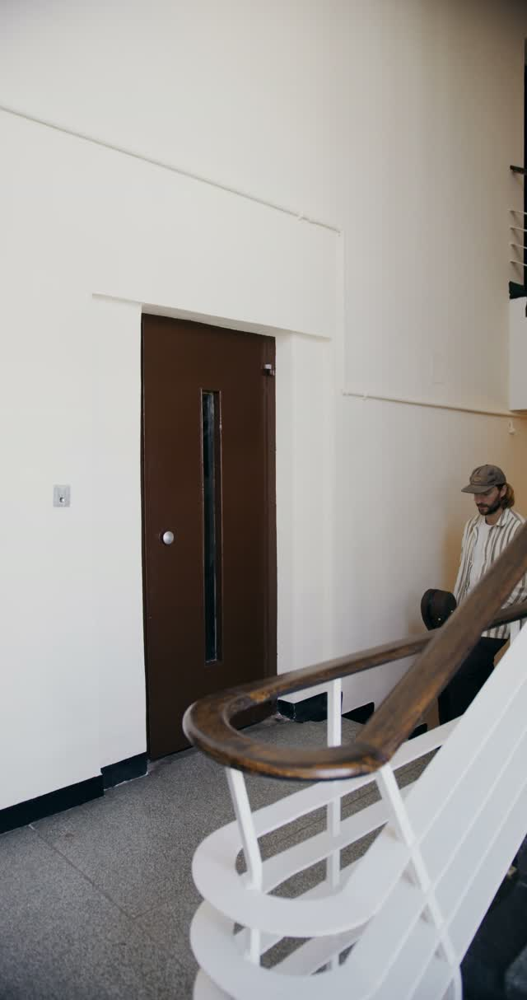
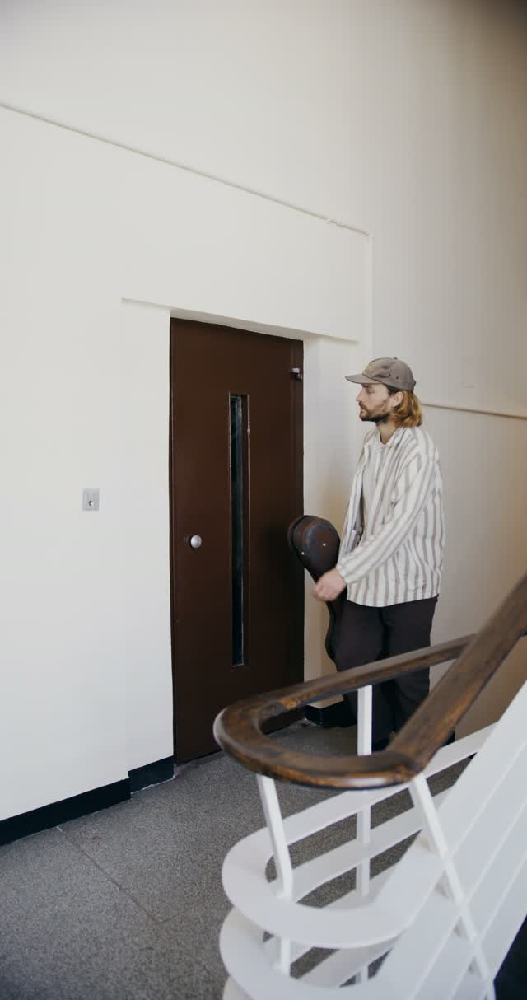
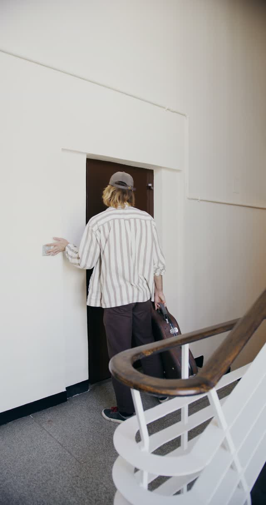
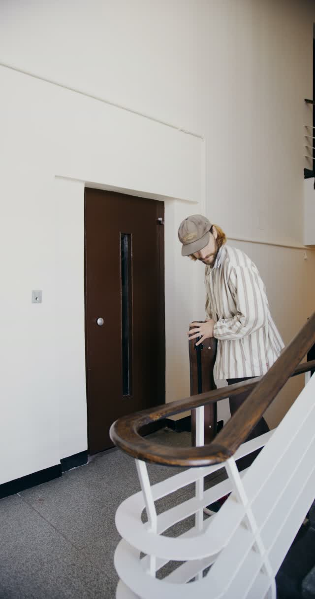

A motion trigger wakes the camera. Three reusable frame buffers keep memory predictable.
EdgeVision checks camera footage locally and sends useful events to AWS. Follow a visit from motion to cloud.
A working camera simulator, built with FreeRTOS and AWS.
Most footage never needs a neural network. EdgeVision asks a cheaper question first, then spends compute where it matters.

A motion trigger wakes the camera. Three reusable frame buffers keep memory predictable.

A motion gate removes quiet frames. A compute budget prevents a growing backlog.

The detector checks selected frames. Three hits in five recent checks confirm an event.

A small event travels over MQTT to AWS. During an outage, a bounded queue holds it.
Select a stage to follow a frame. The camera wakes only after a motion trigger.
Median event payload per visit across six runs of the same evaluation clip.
Peak tracked firmware heap, within a 512 KB budget. Host-side vision memory is separate.
Median share of captured frames that reached the simulated AI accelerator.
One labeled clip demonstrates the pipeline, not general detection accuracy. Hardware timing is simulated.
Yes. Open the demo and play the recorded visit. To control the live simulator, start the local demo script and switch to Live simulator.
It runs on your PC. Ring's official Playground API has been tested as a trigger source. Physical Ring cameras and live Ring video input remain unverified.
Events such as person_detected, confidence, and timing. EdgeVision's event pipeline does not upload the evaluation video. The deployed events API is currently publicly readable.
The demo includes frame outcomes, detection scores, memory usage, and a recovery lab. The guide explains the FreeRTOS tasks, hardware simulation, networking, and known limits.